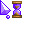
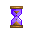
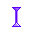

I got some of the more obscure nameshere although xcursors seems to honor css names for the cursor in the browser.
After geting a png of your cursors (around ten will do for basic processes). you must make a config file for xcursorgen. Note, grafx2 supports converting .cur from windows into a png.
SIZE X Y PATH/TO/PNG ms
you may chose to add diffrent sizes or animate the cursor with diffrent png, so long as you include the optional frame data (1000 makes a second).
x and y is the pixel you use to interact (0, 0 is top left)
in (~/.icons) make a dir for your cursors then make a file called inxed.theme. In the first line put "[Icon Theme]" and the second line put "Name=DIRNAME" you may also add comments and chose to inherit from prexisting themes (Comment=TXT and Inherits=OTHERPACKS). In that directory you make another one called cursors and put your generated cursors there.
then you can simply go to mouse and touchpad app and under theme you should find your cursor theme.
run "xcursorgen CONF OUTPUT" where CONF is the file determening cursor propertys and OUTPUT must be named one of the following (hover to see details)
your main cursor

shows in preview but haven't had the chance to test it yet

likewise

may also define grab, grabbing and all-resize for css while your at it.
used for hyperlinks, may also define hand2 for the terminal
although i dont find default to be that useful, make sure to also define X_cursor and/or xterm to fix an oneko bug =]
you could bobably also skip arrow, link and move. im not too sure.
cursors taken from here
What a complex way of doing things. I mostly made this page for my self so I dont forget the icon alt dragging makes is called a fleur for what ever reason. Although i hope this helps anyone (bty check source for a list of alt text if you can't see it for whatever reason). There are way to many cursors defined with no actuall description for what they are used for so you may find it confusing on what cursors are really nessesary, so i hope this 'guide' helps you in that.